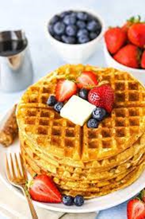
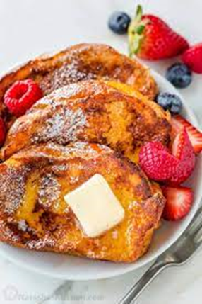

Homemade Pancakes
Ingredients
 2 cups all purpose
1/4 cup granulated sugar
4 tsp baking powder
1/4 tsp baking soda
1/2 tsp salt
1 3/4 cups milk
1/4 cup butter
2 tsp vanilla extract
1 large egg
2 cups all purpose
1/4 cup granulated sugar
4 tsp baking powder
1/4 tsp baking soda
1/2 tsp salt
1 3/4 cups milk
1/4 cup butter
2 tsp vanilla extract
1 large egg
Directions:
- Combine the flour, sugar, baking powder, baking soda and salt in a bowl
- Then add the milk, butter, vanilla and egg and whisk to combine
- Set the batter aside to rest while you lightly grease and heat up your pan.
- Once the pan is warm, add a ¼ of the batter to the pan
- Once a crust forms around the pancake, it is ready to flip.
- Wait another 2 more minutes, then remove from pan.
- Serve with syrup, whipped cream, or fruits, and enjoy!
Homemade Waffles
Ingredients

2 cups all purpose
1/4 cup granulated sugar
4 tsp baking powder
1/2 tsp salt
2 cups milk
1/4 cup melted butter
2 tsp vanilla extract
2 large eggs
Directions:
- Combine the flour, sugar, baking powder, and salt in one bowl.
- Whisk the milk, butter, vanilla and egg in a second bowl.
- Add the wet ingredients to the dry ingredients and whisk together.
- Heat up a waffle iron then add a ¼ of the batter to the pan.
- Once it’s fully cooked, serve with syrup, whipped cream, or fruits, and enjoy!
French Toast
Ingredients

1 tsp ground cinnamon
1/4 tsp ground nutmeg
2 tbsp sugar
4 tbsp butter
4 eggs
1/4 cup milk
1/2 tsp vanilla extract
8 slices of bread, preferably challah or brioche
Directions:
- Whisk together the cinnamon, nutmeg and sugar in one bowl, eggs, milk, and vanilla in a shallow dish.
- Heat a lightly greased pan.
- Dip both sides of the bread into the mixture then place onto the pan.
- Cook on both sides until golden brown
- Serve with syrup, whipped cream, or fruits, and enjoy!